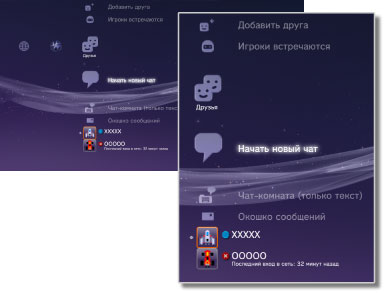

Друзья > Категория "Друзья"
Категория "Друзья"
Для использования этой функции может потребоваться обновление системного программного обеспечения.
Вы можете отправлять и получать сообщения или проводить чат с другими пользователями PS3™ по сети PlayStation®Network. Для использования этих функций вам потребуется создать учетную запись (зарегистрироваться) в PlayStation®Network. В разделе  (Друзья) отображаются следующие значки. Набор значков может быть различным в зависимости от условий использования.
(Друзья) отображаются следующие значки. Набор значков может быть различным в зависимости от условий использования.

 |
Блок-список | Просмотр списка пользователей в блок-списке. |
|---|---|---|
| Добавить друга | Отправка запроса для добавления кого-либо в список "Друзья". | |
 |
Игроки встречаются | Просмотр списка пользователей, с которыми вы играли в формате PlayStation®3 в интерактивные игры*. Выберите этот значок для отправки сообщения игроку или запроса на добавление друга. |
 |
Начать новый чат | Начало нового чата. |
| Чат-комната (только текст) | Этот значок отображается при наличии комнаты для текстового чата. Такой значок отображается, если добавлена новая чат-комната:  . . |
|
 |
Чат-комната голосового/видео чата | Этот значок отображается во время чата. |
 |
Окошко сообщений | Создание новых сообщений и просмотр сообщений, которые были приняты или отправлены. |
 |
(Ваш сетевой идентификатор пользователя) | Здесь отображается аватар, который вы выбрали при создании учетной записи PlayStation®Network. |
|
(Имя друга) | Этот значок обозначает пользователя, который есть в вашем списке друзей. Выберите этот значок для отправки и получения сообщений, а также для чата с друзьями. |
| * |
Некоторые игры могут не поддерживать данную функцию. |
|---|
Подсказки
- На системе PS3™ пользователи, которые находятся в списке друзей, называются "Друзья". Кроме того, сообщения электронной почты, которые отправляются или принимаются в категории (Друзья) называются "сообщения".
- В списке
 (Игроки встречаются) может отображаться до 50 игроков. После превышения этого лимита самые старые записи будут автоматически удаляться при добавлении новых игроков.
(Игроки встречаются) может отображаться до 50 игроков. После превышения этого лимита самые старые записи будут автоматически удаляться при добавлении новых игроков. - Для проведения голосового чата потребуется устройство ввода/вывода звука (например, гарнитура, которая продается отдельно). Для проведения чата с использованием видео также потребуется USB-камера (продается отдельно).
- В системе PS3™ может использоваться совместимая гарнитура USB, гарнитура Bluetooth®, USB-камера (EyeToy™), PlayStation®Eye или USB-камера, поддерживающая видеокласс USB (стандарт UVC).
- При подключении USB-камеры с помощью концентратора USB используйте концентратор, поддерживающий USB 2.0. Если используется концентратор, который не поддерживает USB 2.0, может возникнуть искажение изображения или изображение может не отображаться.
- Для получения информации о поддерживаемых периферийных устройствах и инструкций по их использованию, обратитесь к продавцу, у которого было приобретено периферийное оборудование.